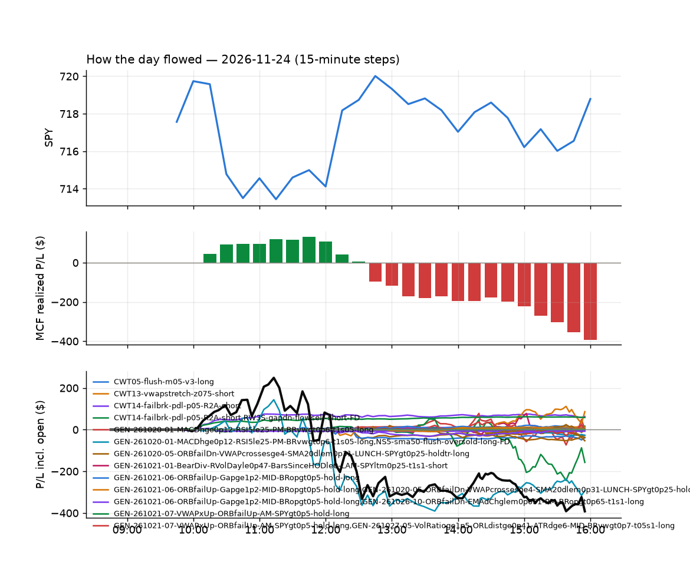
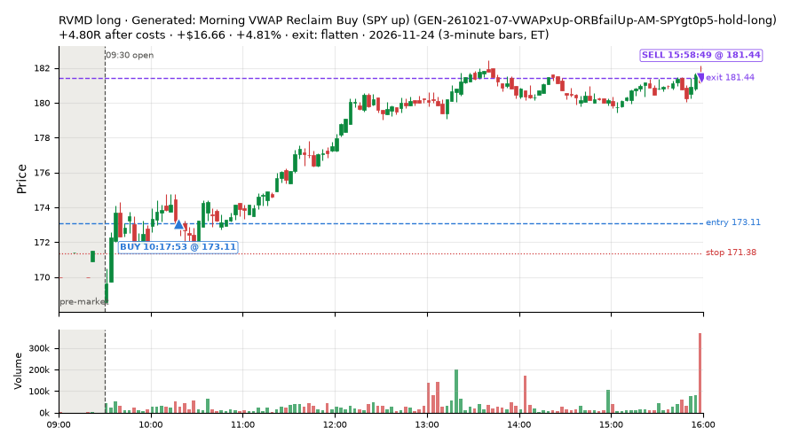
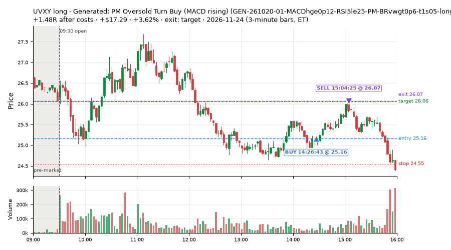
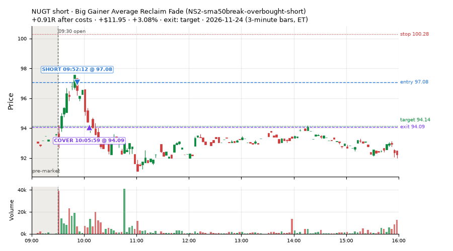
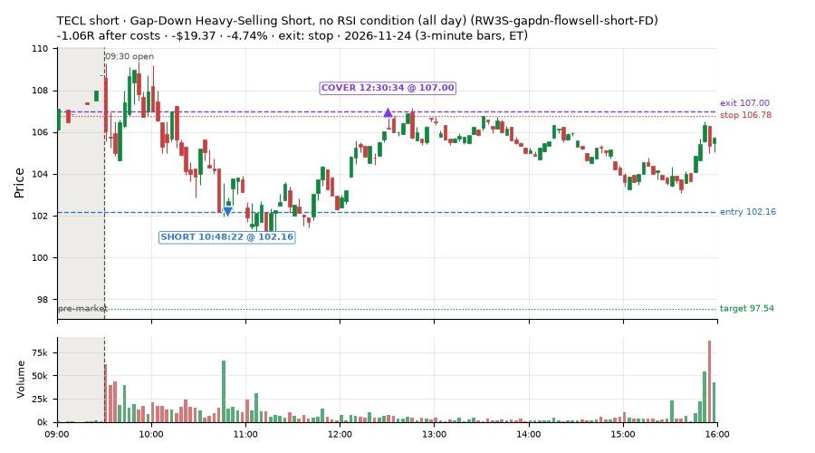
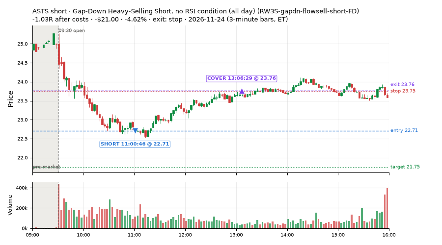
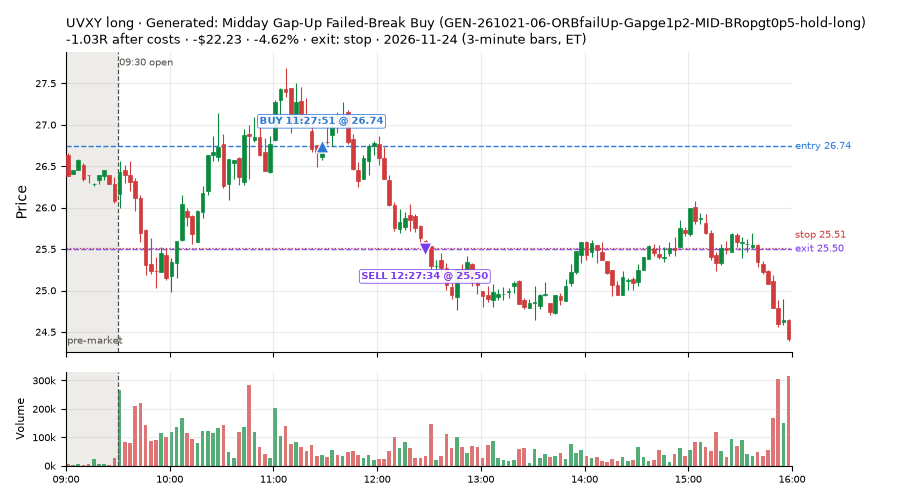
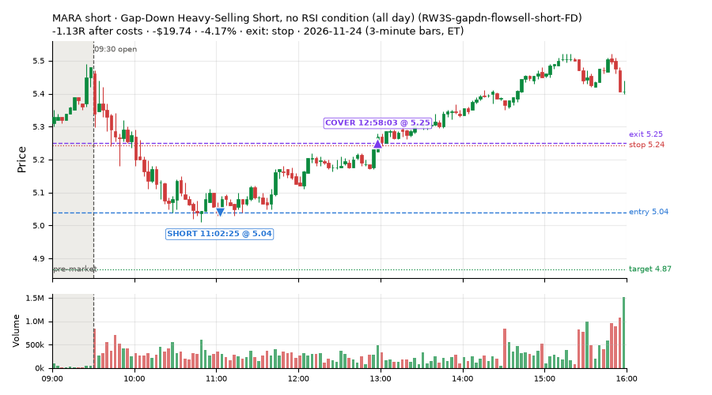
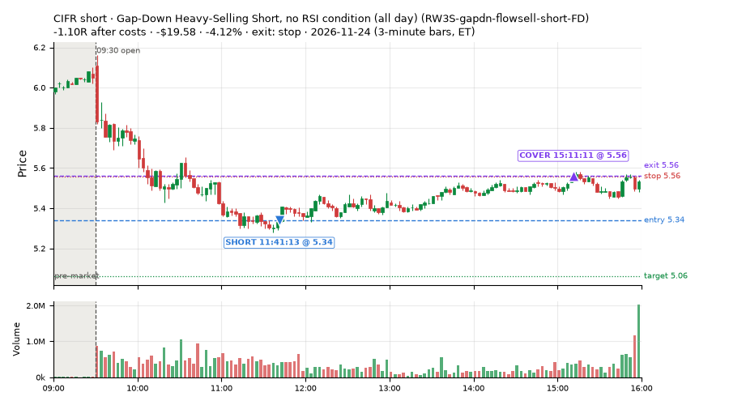

393 trades · win rate 46% · P/L $-391.79
PROBATION: no live setup has passed both locked test periods. 10 owner-directed setups added 2026-10-08 (MarcoFlow top 5 + 5 new), untested live. RW6G1 (RW6 + VWAP band guard) added 2026-10-09, probation.

| Symbol | Setup | Side | In | Out | Entry | Exit | Exit reason | % gained | P/L |
|---|---|---|---|---|---|---|---|---|---|
| RVMD | Generated: Morning VWAP Reclaim Buy (SPY up) (GEN-261021-07-VWAPxUp-ORBfailUp-AM-SPYgt0p5-hold-long) | long | 10:17 | 15:58 | 173.11 | 181.44 | flatten | +4.81% | $16.66 |
| UVXY | Generated: PM Oversold Turn Buy (MACD rising) (GEN-261020-01-MACDhge0p12-RSI5le25-PM-BRvwgt0p6-t1s05-long) | long | 14:26 | 15:04 | 25.16 | 26.07 | target | +3.62% | $17.29 |
| NUGT | Big Gainer Average Reclaim Fade (NS2-sma50break-overbought-short) | short | 09:52 | 10:05 | 97.08 | 94.09 | target | +3.08% | $11.95 |
| Symbol | Setup | Side | In | Out | Entry | Exit | Exit reason | % lost | P/L |
|---|---|---|---|---|---|---|---|---|---|
| TECL | RW3S-gapdn-flowsell-short-FD | short | 10:48 | 12:30 | 102.16 | 107.00 | stop | -4.74% | $-19.37 |
| ASTS | RW3S-gapdn-flowsell-short-FD | short | 11:00 | 13:06 | 22.71 | 23.76 | stop | -4.62% | $-21.00 |
| UVXY | GEN-261021-06-ORBfailUp-Gapge1p2-MID-BRopgt0p5-hold-long | long | 11:27 | 12:27 | 26.74 | 25.50 | stop | -4.62% | $-22.23 |
| MARA | RW3S-gapdn-flowsell-short-FD | short | 11:02 | 12:58 | 5.04 | 5.25 | stop | -4.17% | $-19.74 |
| CIFR | RW3S-gapdn-flowsell-short-FD | short | 11:41 | 15:11 | 5.34 | 5.56 | stop | -4.12% | $-19.58 |








Signal to fill: median 1s, 90th percentile 3s (393 trades). Bars close each minute; the order follows the bar close.
Best excursion (MFE): median 0.40R; worst (MAE) median 0.60R. 33% of trades never got +0.25R in our favour; 13 reached +1R and still closed at or below 0.
| Symbol | Setup | Best R | Worst R | Closed R |
|---|---|---|---|---|
| VIXY | GEN-261020-01-MACDhge0p12-RSI5le25-PM-BRvwgt0p6-t1s05-long | +1.66 | -1.08 | -1.06 |
| JETS | RW3S-gapdn-flowsell-short-FD | +1.41 | -1.15 | -1.27 |
| UVIX | GEN-261020-01-MACDhge0p12-RSI5le25-PM-BRvwgt0p6-t1s05-long | +1.57 | -1.02 | -1.05 |
| UPRO | NS1-rsidip-rsi5pop-long-FD | +1.38 | -1.23 | -1.22 |
| SPXL | NS1-rsidip-rsi5pop-long-FD | +1.23 | -1.02 | -1.09 |
| Entry time | Trades | Win | Avg R | P/L |
|---|---|---|---|---|
| 09:50-10:30 | 53 | 74% | +0.18 | $117.42 |
| 10:30-11:30 | 100 | 36% | -0.36 | $-266.81 |
| 11:30-13:00 | 63 | 48% | -0.22 | $-96.16 |
| 13:00-14:00 | 109 | 38% | -0.26 | $-181.10 |
| 14:00-16:00 | 68 | 50% | -0.03 | $34.86 |
| Setup | Trades | Win | Avg R after costs | Adj R (net of SPY) | Avg R ex-market (all sessions) | P/L |
|---|---|---|---|---|---|---|
| Panic Flush Reversal (3x volume) (CWT05-flush-m05-v3-long) | 1.0 | 0% | -1.21 | -1.31 | – | $-3.92 |
| Stretched Above VWAP Fade (far) (CWT13-vwapstretch-z075-short) | 2.0 | 100% | +0.43 | +0.37 | – | $7.02 |
| Failed Prior-Day-Low Break, SPY-Range Regime (short leg) (CWT14-failbrk-pdl-p05-R2A-short) | 43.0 | 84% | +0.04 | +0.01 | -0.02 (beta -0.50, n 43) | $62.93 |
| Generated: PM Oversold Turn Buy (MACD rising) (GEN-261020-01-MACDhge0p12-RSI5le25-PM-BRvwgt0p6-t1s05-long) | 36.0 | 39% | -0.09 | -0.04 | +0.08 (beta -0.97, n 47) | $-0.11 |
| Generated: Lunch Failed Breakdown Buy (GEN-261020-05-ORBfailDn-VWAPcrossesge4-SMA20dlem0p31-LUNCH-SPYgt0p25-holdtr-long) | 8.0 | 12% | -0.37 | -0.44 | +0.01 (beta -4.79, n 8) | $-27.06 |
| Generated: Late-AM Divergence Short (quiet) (GEN-261021-01-BearDiv-RVolDayle0p47-BarsSinceHODle0-LAM-SPYltm0p25-t1s1-short) | 4.0 | 100% | +0.77 | +1.89 | +0.47 (beta +0.08, n 10) | $8.59 |
| Generated: Midday Gap-Up Failed-Break Buy (GEN-261021-06-ORBfailUp-Gapge1p2-MID-BRopgt0p5-hold-long) | 9.0 | 44% | -0.29 | -0.53 | -0.20 (beta +1.17, n 60) | $-38.22 |
| Generated: Morning VWAP Reclaim Buy (SPY up) (GEN-261021-07-VWAPxUp-ORBfailUp-AM-SPYgt0p5-hold-long) | 5.0 | 60% | +1.08 | +1.11 | +1.47 (beta +6.23, n 5) | $16.64 |
| Generated: Late Failed-Breakout Buy (trend) (GEN-261022-02-ORBfailUp-EMAdChglem0p094-ADX7ge57-LATE-BRvwgt0p7-t05s1-long) | 6.0 | 17% | -0.69 | -0.61 | -0.43 (beta +1.69, n 6) | $-27.23 |
| Generated: PM Volatile Dip Buy (strong mkt) (GEN-261023-02-Ret15mATRlem0p068-EMAdChgge0p028-ATRdge6-PM-BRopgt0p65-hold-long) | 8.0 | 25% | -0.55 | -0.58 | -0.60 (beta +1.20, n 8) | $-53.26 |
| Generated: PM New-Low Buy (strong mkt) (GEN-261023-05-NewLOD-SMA20dlem0p94-ORLdistlem0p24-PM-BRopgt0p65-hold-long) | 1.0 | 0% | -0.59 | -0.64 | – | $-5.04 |
| Generated: Late Failed-Breakdown Pop Short (GEN-261023-09-ORBfailDn-Ret15mge0p54-LATE-BRvwgt0p7-holdtr-short) | 24.0 | 83% | +0.34 | +0.32 | +0.31 (beta +0.76, n 27) | $86.40 |
| Generated: Late Uptrend Dip Buy (up day) (GEN-261026-09-BBpctle0p3-SMA20slopege0p46-FromPCATRge0p45-LATE-BRvwgt0p6-t05s05-long) | 2.0 | 0% | -0.75 | -0.83 | – | $-5.42 |
| Generated: PM Failed-Breakdown Buy (GEN-261026-10-ORBfailDn-EMAdChglem0p051-PM-BRopgt0p65-t1s1-long) | 79.0 | 33% | -0.32 | -0.27 | -0.11 (beta +2.14, n 79) | $-157.20 |
| Generated: Midday Volume Buy (volatile) (GEN-261027-05-VolRatioge1p5-ORLdistge0p41-ATRdge6-MID-BRvwgt0p7-t05s1-long) | 22.0 | 50% | -0.26 | -0.22 | -0.09 (beta +2.45, n 26) | $-37.88 |
| Generated: PM Big Red Bar Buy (up day) (GEN-261028-10-BarRngATRge0p18-Flow3lem0p54-FromPCATRge0p28-PM-SPYgt0p5-hold-long) | 1.0 | 100% | +0.15 | +0.13 | – | $0.50 |
| Sellers into Strength (all day) (MF5-flowsell-vwapup-rsi5hi) owner-directed; holdouts once: Sep-Oct -0.001R n264, Apr-Jun -0.010R n1199 | 8.0 | 75% | +0.19 | +0.27 | -0.26 (beta -1.01, n 41) | $7.57 |
| Afternoon Exhaustion Short, Gap-Down, SPY Up (near-miss) (NM-RWR1-exh150-gapdn-spyup-pm-short) | 3.0 | 100% | +0.34 | +0.25 | – | $12.48 |
| Big Gainer Dip-and-Pop (all day) (NS1-rsidip-rsi5pop-long-FD) | 2.0 | 0% | -1.15 | -0.84 | -0.11 (beta +0.80, n 8) | $-7.58 |
| Big Gainer Average Reclaim Fade (NS2-sma50break-overbought-short) owner-directed; holdouts once: Sep-Oct -0.115R n76, Apr-Jun +0.021R n587 | 8.0 | 100% | +0.87 | +0.86 | +0.20 (beta -0.41, n 30) | $58.26 |
| Big Loser Flush Buy (all day) (NS5-sma50-flush-oversold-long-FD) | 12.0 | 42% | -0.06 | -0.19 | -0.18 (beta +0.90, n 95) | $-0.48 |
| Gap-Down Heavy-Selling Short, no RSI condition (all day) (RW3S-gapdn-flowsell-short-FD) | 88.0 | 24% | -0.51 | -0.28 | -0.21 (beta -0.69, n 308) | $-292.19 |
| Big Gainer Fade, VWAP Band Guard (all day) (RW6G1-ns2-up3-vwap2sd-short-FD) | 2.0 | 50% | +0.34 | +0.16 | +0.10 (beta -0.47, n 41) | $3.94 |
| Opening-Range Breakdown Buy (all day) (ST1-ordn-long-pm-t05s1-FD) | 1.0 | 100% | +0.14 | +0.17 | -0.08 (beta +0.76, n 59) | $3.61 |
| Afternoon Blow-off Short (all day) (exhaustion_short-FD) | 17.0 | 53% | -0.06 | +0.09 | +0.11 (beta -0.56, n 52) | $-4.68 |
| Index Last-Half-Hour Momentum (intraday_momentum) failed Apr-Jun holdout: -0.091R/trade over 147 trades | 1.0 | 100% | +0.27 | -0.10 | – | $0.54 |
Market direction (SPY, beta 1) accounted for $-164.33 of today's $-391.79; the rest ($-227.46) came from the setups themselves. Avg R net of SPY: -0.11 (incl. a hedge leg's cost; report only).
50 setups live today. Today: 973 signals, 393 taken, 30 lost because another setup held the symbol (3%). Since 2026-10-21 (25 sessions): 33953 signals, 10738 taken, 1400 lost to other setups (4%). Peak open positions today 229 of 300 slots. Earnings blackout removed 121 symbols before scanning.
Simulated playing time (not live): 23157 what-if trades of signals not taken, avg -0.04R, 55% winners; of them 1399 lost to another setup (avg -0.02R).
Silent: GEN-261028-02-VWAPxDn-NewLOD-AM-QQQgt0p6-t1s1-long, GEN-261020-02-RSIslopelem19-BarRngATRge0p14-BuyPressge0p17-LATE-BRvwgt0p7-t05s1-short, GEN-261021-08-RSI2le0-Ret15mATRge0p16-ATRdge3p6-LUNCH-QQQgt0p6-holdtr-long, GEN-POD1022-01-thrasher-breadth-thrust-stocks-holdtr-long, GEN-261023-01-VWAPxUp-VWAPatrge0p33-LAM-SPYgt0p5-t05s05-short, GEN-261029-10-RSIslopege19-Ret5mlem0p21-EMAdiffge0p29-OPEN-BRvwgt0p5-t1s1-short, GEN-261029-05-BearDiv-RSI14ge78-Compress6le0p091-AM-BRopgt0p5-t05s05-long · Crowded out: NS2-sma50break-overbought-short, NM-RWR1-exh150-gapdn-spyup-pm-short · Starved: exhaustion_short-FD, heat_fade_long-FD, heat_fade_short-FD, MF1-945-flowsell-vwapup-FD, heat_fade_long
| Prio | Setup | Today sig / taken | Sessions | Signals / taken / trades | Taken/day | Expected/day | Lost to other setups | Lost to (setup n) | Top skip reasons | SIMULATED: not-taken n / avg R / win | Verdict |
|---|---|---|---|---|---|---|---|---|---|---|---|
| 1 | Big Gainer Fade, VWAP Band Guard (all day) RW6G1-ns2-up3-vwap2sd-short-FD | 4 / 2 | 15 | 98 / 41 / 41 | 2.73 | 3.73 | 4 | RW6-ns2-up3-short-FD 3, NS2-sma50break-overbought-short-FD 2, RW6G1-ns2-up3-vwap2sd-short-FD 2 | not shortable / shorts off 42, symbol held by another setup 4, broker rejected 4 | 57 / +0.16R / 61% | slow 13.7 entries/week; ~4 weeks to 60 trades |
| 2 | Generated: Late Failed-Breakdown Pop Short GEN-261023-09-ORBfailDn-Ret15mge0p54-LATE-BRvwgt0p7-holdtr-short | 54 / 24 | 5 | 59 / 27 / 27 | 5.40 | – | 14 | GEN-261026-10-ORBfailDn-EMAdChglem0p051-PM-BRopgt0p65-t1s1-long 10, GEN-261020-01-MACDhge0p12-RSI5le25-PM-BRvwgt0p6-t1s05-long 4, CWT14-failbrk-pdl-p05-R2A-long 1 | symbol held by another setup 14, spread / quote / size 8, not shortable / shorts off 7 | 32 / +0.16R / 59% | ok 27.0 entries/week |
| 3 | Generated: Midday Oversold Short (quiet day) GEN-261028-06-RSI5le13-VWAPatrlem0p15-DayRngVsPrevle0p34-MID-BRoplt0p35-hold-short | 0 / 0 | 5 | 9 / 6 / 6 | 1.20 | – | 0 | – | daily loss cap 2, spread / quote / size 1 | 3 / -0.13R / 67% | slow 6.0 entries/week; ~10 weeks to 60 trades |
| 4 | Generated: Late-AM Divergence Short (quiet) GEN-261021-01-BearDiv-RVolDayle0p47-BarsSinceHODle0-LAM-SPYltm0p25-t1s1-short | 6 / 4 | 5 | 22 / 10 / 10 | 2.00 | – | 0 | – | other 8, spread / quote / size 3, not shortable / shorts off 1 | 12 / +0.23R / 67% | slow 10.0 entries/week; ~6 weeks to 60 trades |
| 5 | Generated: Lunch Failed Breakdown Buy GEN-261020-05-ORBfailDn-VWAPcrossesge4-SMA20dlem0p31-LUNCH-SPYgt0p25-holdtr-long | 29 / 8 | 4 | 29 / 8 / 8 | 2.00 | – | 0 | – | daily loss cap 20, spread / quote / size 1 | 21 / +0.13R / 67% | slow 10.0 entries/week; ~6 weeks to 60 trades |
| 6 | Big Gainer Dip-and-Pop (all day) NS1-rsidip-rsi5pop-long-FD | 17 / 2 | 4 | 26 / 8 / 8 | 2.00 | 5.39 | 1 | CWT14-failbrk-pdl-p05-R2A-short 1 | daily loss cap 15, symbol held by another setup 1, spread / quote / size 1 | 18 / -0.19R / 56% | slow 10.0 entries/week; ~6 weeks to 60 trades |
| 7 | Afternoon Blow-off Short (all day) exhaustion_short-FD | 46 / 17 | 4 | 112 / 52 / 52 | 13.00 | 64.64 | 1 | GEN-261027-05-VolRatioge1p5-ORLdistge0p41-ATRdge6-MID-BRvwgt0p7-t05s1-long 1 | not shortable / shorts off 27, daily loss cap 19, spread / quote / size 13 | 60 / +0.17R / 57% | starved 13.00 entries/day vs ~64.64 expected |
| 8 | Sellers into Strength (all day) MF5-flowsell-vwapup-rsi5hi | 14 / 8 | 4 | 80 / 41 / 41 | 10.25 | 15.47 | 11 | MF5-flowsell-vwapup-rsi5hi-FD 10, MF3-open-flowsell-rsi5hi-FD 5, MF1-945-flowsell-vwapup-FD 2 | spread / quote / size 23, symbol held by another setup 11, not shortable / shorts off 4 | 39 / +0.36R / 72% | ok 51.2 entries/week |
| 9 | Generated: Morning VWAP-Loss Low Buy (QQQ up) GEN-261028-02-VWAPxDn-NewLOD-AM-QQQgt0p6-t1s1-long | 0 / 0 | 4 | 0 / 0 / 0 | 0.00 | – | 0 | – | – | 0 / – | silent no signals in 4 session(s); no expected rate on file |
| 10 | Generated: PM Oversold Turn Buy (MACD rising) GEN-261020-01-MACDhge0p12-RSI5le25-PM-BRvwgt0p6-t1s05-long | 44 / 36 | 2 | 57 / 47 / 47 | 23.50 | – | 3 | RW3S-gapdn-flowsell-short-FD 2, MF5-flowsell-vwapup-rsi5hi 1 | spread / quote / size 5, symbol held by another setup 3, price through stop/target 2 | 10 / -0.34R / 40% | ok 117.5 entries/week |
| 11 | Stretched Above VWAP Fade (far) CWT13-vwapstretch-z075-short | 3 / 2 | 2 | 6 / 2 / 2 | 1.00 | – | 0 | – | not shortable / shorts off 2, spread / quote / size 2 | 4 / -0.67R / 25% | slow 5.0 entries/week; ~12 weeks to 60 trades |
| 12 | Failed Prior-Day-Low Break, SPY-Range Regime (short leg) CWT14-failbrk-pdl-p05-R2A-short | 82 / 43 | 2 | 82 / 43 / 43 | 21.50 | – | 1 | GEN-261026-10-ORBfailDn-EMAdChglem0p051-PM-BRopgt0p65-t1s1-long 1 | spread / quote / size 36, not shortable / shorts off 2, symbol held by another setup 1 | 39 / +0.02R / 72% | ok 107.5 entries/week |
| 13 | Generated: PM Failed-Breakdown Buy GEN-261026-10-ORBfailDn-EMAdChglem0p051-PM-BRopgt0p65-t1s1-long | 323 / 79 | 2 | 323 / 79 / 79 | 39.50 | – | 5 | RW3S-gapdn-flowsell-short-FD 2, CWT14-failbrk-pdl-p05-R2A-short 2, exhaustion_short-FD 1 | per-setup cap 127, daily loss cap 58, other 31 | 244 / +0.01R / 56% | ok 197.5 entries/week |
| 14 | Generated: PM Sharp-Drop Buy (in uptrend) GEN-261019-03-Ret15mATRlem0p12-FromOpenATRlem0p34-SMA20slopege0p29-PM-BRoplt0p5-t05s1-long | 0 / 0 | 2 | 3 / 3 / 3 | 1.50 | – | 0 | – | – | 0 / – | slow 7.5 entries/week; ~8 weeks to 60 trades |
| 15 | Panic Flush Reversal (3x volume) CWT05-flush-m05-v3-long | 4 / 1 | 2 | 4 / 1 / 1 | 0.50 | – | 0 | – | spread / quote / size 3 | 3 / -0.15R / 67% | slow 2.5 entries/week; ~24 weeks to 60 trades |
| 16 | Opening-Range Breakdown Buy (all day) ST1-ordn-long-pm-t05s1-FD | 2 / 1 | 25 | 100 / 59 / 59 | 2.36 | 3.49 | 2 | heat_fade_short-FD 1, NS3-failed-vwap-reclaim-short-FD 1 | spread / quote / size 26, daily loss cap 7, slots full 3 | 41 / -0.01R / 56% | slow 11.8 entries/week; ~5 weeks to 60 trades |
| 17 | Big Gainer Average Reclaim Fade NS2-sma50break-overbought-short | 12 / 8 | 25 | 283 / 30 / 30 | 1.20 | 5.74 | 129 | NS2-sma50break-overbought-short-FD 115, RW6-ns2-up3-short-FD 56, CWT12-coil-k4-long 10 | symbol held by another setup 129, spread / quote / size 67, not shortable / shorts off 35 | 253 / +0.39R / 75% | crowded-out 129 of 283 signals (46%) lost to setups already holding the symbol |
| 18 | Big Loser Flush Buy (all day) NS5-sma50-flush-oversold-long-FD | 15 / 12 | 15 | 153 / 95 / 95 | 6.33 | 6.32 | 10 | NS3-failed-vwap-reclaim-short-FD 4, RW4-ns3-adv150-short-FD 4, RW3S-gapdn-flowsell-short-FD 2 | daily loss cap 26, spread / quote / size 14, symbol held by another setup 10 | 58 / -0.00R / 50% | ok 31.7 entries/week |
| 19 | Gap-Down Heavy-Selling Short, no RSI condition (all day) RW3S-gapdn-flowsell-short-FD | 215 / 88 | 7 | 1191 / 308 / 308 | 44.00 | – | 14 | CWT12-coil-k4-long 3, GEN-261019-05-RSIslopelem9-PDLdistle0p14-EMAdifflem0p46-OPEN-SPYltm0p5-t1s1-long 3, CWT14-failbrk-pdl-p05-long 2 | daily loss cap 523, spread / quote / size 237, not shortable / shorts off 65 | 883 / +0.27R / 67% | ok 220.0 entries/week |
| 20 | Generated: Late Uptrend Dip Buy (up day) GEN-261026-09-BBpctle0p3-SMA20slopege0p46-FromPCATRge0p45-LATE-BRvwgt0p6-t05s05-long | 5 / 2 | 5 | 6 / 3 / 3 | 0.60 | – | 1 | CWT13-vwapstretch-z075-short 1 | spread / quote / size 2, symbol held by another setup 1 | 3 / -0.41R / 33% | slow 3.0 entries/week; ~20 weeks to 60 trades |
| 21 | Generated: Late RSI Drop Short (big bar) GEN-261020-02-RSIslopelem19-BarRngATRge0p14-BuyPressge0p17-LATE-BRvwgt0p7-t05s1-short | 0 / 0 | 5 | 0 / 0 / 0 | 0.00 | – | 0 | – | – | 0 / – | silent no signals in 5 session(s); no expected rate on file |
| 22 | Generated: Lunch RSI(2) Flush Buy (volatile) GEN-261021-08-RSI2le0-Ret15mATRge0p16-ATRdge3p6-LUNCH-QQQgt0p6-holdtr-long | 0 / 0 | 5 | 0 / 0 / 0 | 0.00 | – | 0 | – | – | 0 / – | silent no signals in 5 session(s); no expected rate on file |
| 23 | Podcast: Breadth Thrust, Strong Large Caps (observation) GEN-POD1022-01-thrasher-breadth-thrust-stocks-holdtr-long | 0 / 0 | 5 | 0 / 0 / 0 | 0.00 | – | 0 | – | – | 0 / – | silent no signals in 5 session(s); no expected rate on file |
| 24 | Backside VWAP-Test Short (big runner) CWT04-backside-vwaptest-a25-short | 1 / 0 | 5 | 1 / 0 / 0 | 0.00 | – | 0 | – | other 1 | 1 / -1.15R / 0% | slow no entries yet |
| 25 | Generated: Late-AM VWAP Pop Short (SPY up) GEN-261023-01-VWAPxUp-VWAPatrge0p33-LAM-SPYgt0p5-t05s05-short | 0 / 0 | 5 | 0 / 0 / 0 | 0.00 | – | 0 | – | – | 0 / – | silent no signals in 5 session(s); no expected rate on file |
| 26 | Generated: PM New-Low Buy (strong mkt) GEN-261023-05-NewLOD-SMA20dlem0p94-ORLdistlem0p24-PM-BRopgt0p65-hold-long | 5 / 1 | 5 | 5 / 1 / 1 | 0.20 | – | 0 | – | spread / quote / size 4 | 4 / -0.46R / 25% | slow 1.0 entries/week; ~60 weeks to 60 trades |
| 27 | Generated: Open Below-VWAP Turn Buy (QQQ up) GEN-261021-10-MACDhge0p079-VWAPbarslem7-OPEN-QQQup-t1s05-long | 0 / 0 | 5 | 24 / 7 / 7 | 1.40 | – | 0 | – | other 11, spread / quote / size 6 | 17 / -1.18R / 0% | slow 7.0 entries/week; ~9 weeks to 60 trades |
| 28 | Generated: Open RSI Pop Reversal Short GEN-261029-10-RSIslopege19-Ret5mlem0p21-EMAdiffge0p29-OPEN-BRvwgt0p5-t1s1-short | 0 / 0 | 5 | 0 / 0 / 0 | 0.00 | – | 0 | – | – | 0 / – | silent no signals in 5 session(s); no expected rate on file |
| 29 | Generated: Lunch VWAP Reclaim Buy GEN-261028-03-EMAdChgge0p15-VWAPxUp-Since950ATRlem0p43-LUNCH-SPYgt0p25-hold-long | 4 / 0 | 5 | 4 / 0 / 0 | 0.00 | – | 0 | – | spread / quote / size 3, other 1 | 4 / -0.36R / 50% | slow no entries yet |
| 30 | Generated: PM Big Red Bar Buy (up day) GEN-261028-10-BarRngATRge0p18-Flow3lem0p54-FromPCATRge0p28-PM-SPYgt0p5-hold-long | 3 / 1 | 5 | 3 / 1 / 1 | 0.20 | – | 0 | – | spread / quote / size 1, other 1 | 2 / +0.26R / 50% | slow 1.0 entries/week; ~60 weeks to 60 trades |
| 31 | Generated: PM Volatile Dip Buy (strong mkt) GEN-261023-02-Ret15mATRlem0p068-EMAdChgge0p028-ATRdge6-PM-BRopgt0p65-hold-long | 9 / 8 | 5 | 9 / 8 / 8 | 1.60 | – | 0 | – | spread / quote / size 1 | 1 / -0.61R / 0% | slow 8.0 entries/week; ~8 weeks to 60 trades |
| 32 | Afternoon Exhaustion Short, Gap-Down, SPY Up (near-miss) NM-RWR1-exh150-gapdn-spyup-pm-short | 8 / 3 | 5 | 8 / 3 / 3 | 0.60 | – | 4 | GEN-261026-10-ORBfailDn-EMAdChglem0p051-PM-BRopgt0p65-t1s1-long 3, GEN-261020-01-MACDhge0p12-RSI5le25-PM-BRvwgt0p6-t1s05-long 1 | symbol held by another setup 4, spread / quote / size 1 | 5 / +0.28R / 80% | crowded-out 4 of 8 signals (50%) lost to setups already holding the symbol |
| 33 | Generated: Late Failed-Breakout Buy (trend) GEN-261022-02-ORBfailUp-EMAdChglem0p094-ADX7ge57-LATE-BRvwgt0p7-t05s1-long | 12 / 6 | 5 | 12 / 6 / 6 | 1.20 | – | 1 | RW3S-gapdn-flowsell-short-FD 1 | spread / quote / size 4, symbol held by another setup 1, other 1 | 6 / -0.30R / 33% | slow 6.0 entries/week; ~10 weeks to 60 trades |
| 34 | Prior-Day Low Sweep Reversal to VWAP LIQ-pdl-sweep-open15-vwap-long | 0 / 0 | 5 | 2 / 1 / 1 | 0.20 | – | 0 | – | daily loss cap 1 | 1 / -1.06R / 0% | slow 1.0 entries/week; ~60 weeks to 60 trades |
| 35 | Generated: Lunch Wide-Range Short (SPY down) GEN-261021-03-RSI5le34-Ret15mATRge0p12-DayRngVsPrevge1p2-LUNCH-SPYltm0p25-t05s1-short | 0 / 0 | 5 | 15 / 2 / 2 | 0.40 | – | 0 | – | not shortable / shorts off 10, spread / quote / size 3 | 13 / -0.21R / 54% | slow 2.0 entries/week; ~30 weeks to 60 trades |
| 36 | Generated: Morning Overbought Coil Buy GEN-261029-05-BearDiv-RSI14ge78-Compress6le0p091-AM-BRopgt0p5-t05s05-long | 0 / 0 | 5 | 0 / 0 / 0 | 0.00 | – | 0 | – | – | 0 / – | silent no signals in 5 session(s); no expected rate on file |
| 37 | Generated: Morning Strong-Trend Drop Short GEN-261022-09-Ret15mATRlem0p16-BarRngATRge0p11-ADX7ge64-AM-BRvwlt0p3-hold-short | 0 / 0 | 3 | 25 / 14 / 14 | 4.67 | – | 0 | – | spread / quote / size 7, not shortable / shorts off 2, price through stop/target 2 | 11 / +0.53R / 55% | ok 23.3 entries/week |
| 38 | Generated: Open Prior-Day-Low Buy (SPY down) GEN-261019-05-RSIslopelem9-PDLdistle0p14-EMAdifflem0p46-OPEN-SPYltm0p5-t1s1-long | 0 / 0 | 3 | 132 / 98 / 98 | 32.67 | – | 4 | RW3S-gapdn-flowsell-short-FD 4, MF1-945-flowsell-vwapup-FD 1 | spread / quote / size 29, symbol held by another setup 4, per-setup cap 1 | 34 / -0.69R / 15% | ok 163.3 entries/week |
| 39 | Generated: Midday Gap-Up Failed-Break Buy GEN-261021-06-ORBfailUp-Gapge1p2-MID-BRopgt0p5-hold-long | 11 / 9 | 4 | 139 / 60 / 60 | 15.00 | – | 2 | exhaustion_short-FD 1, MF5-flowsell-vwapup-rsi5hi 1 | other 65, spread / quote / size 12, symbol held by another setup 2 | 79 / -0.75R / 9% | ok 75.0 entries/week |
| 40 | Generated: Morning Selling-Burst Buy GEN-261028-09-FlowShiftlem0p65-ADX7le23-AM-BRoplt0p35-t05s1-long | 0 / 0 | 4 | 31 / 20 / 20 | 5.00 | – | 1 | RW3S-gapdn-flowsell-short-FD 1 | spread / quote / size 10, symbol held by another setup 1 | 11 / -0.01R / 73% | ok 25.0 entries/week |
| 41 | Generated: Morning VWAP Reclaim Buy (SPY up) GEN-261021-07-VWAPxUp-ORBfailUp-AM-SPYgt0p5-hold-long | 7 / 5 | 4 | 7 / 5 / 5 | 1.25 | – | 0 | – | spread / quote / size 2 | 2 / +0.11R / 50% | slow 6.2 entries/week; ~10 weeks to 60 trades |
| 42 | Generated: Lunch Tight-Range Pop Buy GEN-261028-08-Ret5mge0p21-SMA20dlem0p16-Compress6le0p11-LUNCH-BRoplt0p35-holdtr-long | 0 / 0 | 4 | 120 / 25 / 25 | 6.25 | – | 2 | MF2-open-rsimidhi-flowsell-FD 1, MF4-h40-open-flowsell-FD 1 | daily loss cap 86, spread / quote / size 6, symbol held by another setup 2 | 95 / -0.58R / 15% | ok 31.2 entries/week |
| 43 | Generated: Midday Volume Buy (volatile) GEN-261027-05-VolRatioge1p5-ORLdistge0p41-ATRdge6-MID-BRvwgt0p7-t05s1-long | 24 / 22 | 4 | 29 / 26 / 26 | 6.50 | – | 0 | – | spread / quote / size 3 | 3 / -0.53R / 33% | ok 32.5 entries/week |
| 44 | Generated: Midday Low Bounce Buy (MACD up) GEN-261020-03-MACDhge0p079-BarsSinceLODle5-MID-BRvwlt0p3-t05s05-long | 0 / 0 | 2 | 0 / 0 / 0 | 0.00 | – | 0 | – | – | 0 / – | quiet - wait no signals in 2 session(s); too early to tell |
| 45 | Failed Prior-Day-Low Break, SPY-Range Regime (long leg) CWT14-failbrk-pdl-p05-R2A-long | 0 / 0 | 2 | 33 / 16 / 16 | 8.00 | – | 0 | – | spread / quote / size 17 | 17 / +0.03R / 71% | ok 40.0 entries/week |
| 46 | Generated: Midday Choppy Oversold Buy GEN-261029-02-RSI2le0-VWAPcrossesge9-DayRngVsPrevle0p52-MID-BRvwlt0p4-hold-long | 1 / 0 | 2 | 53 / 35 / 35 | 17.50 | – | 0 | – | other 13, spread / quote / size 5 | 18 / +0.49R / 72% | ok 87.5 entries/week |
| 47 | Generated: PM New-Low Buy (failed breakout) GEN-261022-06-NewLOD-ORBfailUp-BuyPresslem0p49-PM-SPYltm0p5-t1s1-long | 0 / 0 | 2 | 0 / 0 / 0 | 0.00 | – | 0 | – | – | 0 / – | quiet - wait no signals in 2 session(s); too early to tell |
| 48 | Index Last-Half-Hour Momentum intraday_momentum | 4 / 1 | 2 | 8 / 1 / 1 | 0.50 | 2.37 | 1 | MF5-flowsell-vwapup-rsi5hi 1 | spread / quote / size 6, symbol held by another setup 1 | 7 / -0.41R / 14% | watch 0.50 entries/day vs ~2.37 expected |
| 49 | Generated: Late-AM Gap-Up Failed-Break Short GEN-261027-09-ORBfailDn-Gapge2-Slope6ge0p03-LAM-BRvwlt0p5-t05s05-short | 8 / 0 | 2 | 8 / 0 / 0 | 0.00 | – | 0 | – | not shortable / shorts off 8 | 8 / +0.83R / 88% | slow no entries yet |
| 50 | Generated: Morning Weak-Bounce Short (quiet) GEN-261022-08-EMAdChglem0p094-Flow3ge1-RVolDayle0p59-AM-SPYgt0p25-holdtr-short | 1 / 0 | 2 | 36 / 24 / 24 | 12.00 | – | 0 | – | spread / quote / size 10, not shortable / shorts off 2 | 12 / +0.62R / 92% | ok 60.0 entries/week |
Every trade is attached as a CSV you can open and edit in Excel or Google Sheets. Live page: https://misiti15.github.io/MCF/live/